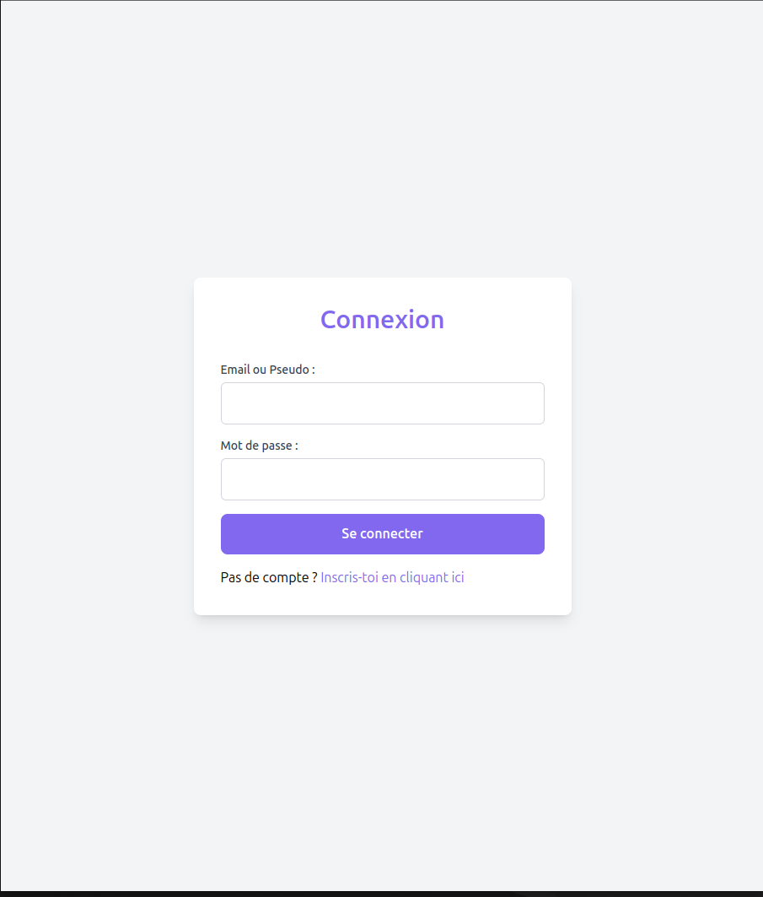

MyTwitter est une réplique fonctionnelle du célèbre réseau social Twitter (maintenant X), développée dans le cadre de ma formation à Epitech. Ce projet full-stack a été réalisé en équipe de 3 personnes sur une période d'un mois, nous permettant d'explorer en profondeur la création d'une plateforme sociale interactive.
Nous avons adopté une approche collaborative en nous répartissant les tâches selon nos compétences. J'ai principalement pris en charge la partie backend en PHP, en développant notamment les fonctionnalités de connexion et d'inscription des utilisateurs, ainsi que le système de likes pour les posts. Cette expérience m'a permis d'approfondir mes compétences en développement back-end avec PHP et MySQL, tout en contribuant à un projet d'équipe avec un workflow professionnel et une communication efficace. Pour le style nous avons pu aussi utiliser du Tailwind.